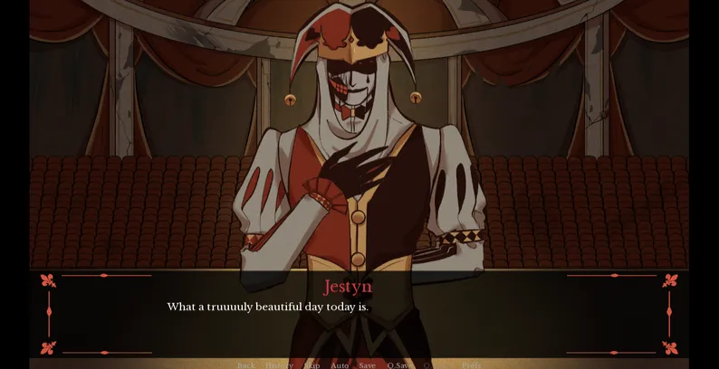
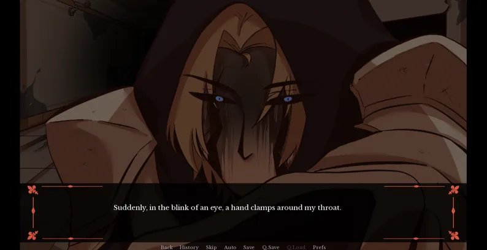
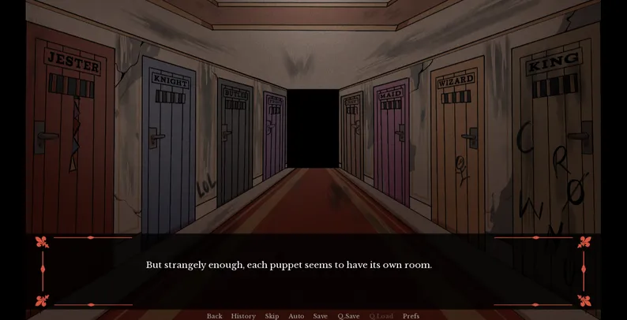

Kingdom of Marionettes — Play Free Online
A psychological horror visual novel about a night security guard at an abandoned puppet theater. The puppets are not supposed to move. The jester named Jestyn did not get the memo. Play Kingdom of Marionettes free in your browser now.

You Might Also Like


About Kingdom of Marionettes
Your First Night at the Theater
You play a security guard hired to watch over a theater that closed years ago. The job listing asked for almost nothing — show up, walk the halls, make sure nobody breaks in. Easy money. The building still has its old puppet collection stored backstage. Wooden figures dressed in faded costumes, arranged on stands. On your first night, you notice the jester puppet in the corner has a sunflower pinned to his collar. You are sure it was not there when you clocked in. Kingdom of Marionettes starts quiet. The theater feels empty. But by midnight, the empty feeling starts to feel like being watched. That slow shift from quiet to wrong is what Kingdom of Marionettes does best — it never announces the horror, it just lets it seep in.

Who Made It
Cherry Yan, also known as Thepipiw, created Kingdom of Marionettes for the Yandere Game Jam 2026. She wanted the game to run in a browser so anyone could play without downloading anything. The game was built as a short demo — one act, roughly an hour per run, but with enough branching paths to keep you coming back. The writing in Kingdom of Marionettes focuses on atmosphere. No loud noises, no monsters lunging at the screen. Just a theater getting stranger by the hour, and a jester who talks like he has known you for years.
The Puppets You Meet
Not all the puppets in Kingdom of Marionettes talk to you at once. Some stay in the background for most of your shift. But each one has a name, a voice, and an opinion about the new guard. Pay attention to how they speak to each other — what they say when they think you are out of earshot. The character writing in Kingdom of Marionettes rewards players who treat every line of dialogue as potentially important.
Jestyn
215cm tall. Loves sunflowers. Speaks to you like you are the most interesting thing in the room — and maybe the only thing. Playful one moment, intense the next. He is the first puppet you meet in Kingdom of Marionettes and the one you will remember longest.
Knighter
The biggest puppet in Kingdom of Marionettes at 217cm. Carries a sword and talks about honor. He does not trust easily, but once he does, he protects. Watch how he reacts when you talk to the others.
Wizzy
208cm. His favorite flower is the rose. Quiet compared to the others, but his dialogue holds hints that only make sense on a second or third playthrough. Does not say much. What he does say sticks.
How to Play Kingdom of Marionettes
Kingdom of Marionettes is a visual novel. You click through dialogue, pick from two or three response options, and watch how the characters react. There is no combat, no inventory, no puzzles. The only thing Kingdom of Marionettes asks is that you pay attention. Every choice nudges the story in a direction the game never announces. The affection system is hidden. The consequences are not. You will feel them before you understand them. Playing Kingdom of Marionettes means living with the results of decisions you did not know you were making.
How Choices Work
When you pick what to say, Kingdom of Marionettes does not show you a meter or a notification. No "+1 Affection" popup. No morality icon. Instead, the characters simply start treating you differently. Jestyn's tone might shift from warm to cold over the course of a single conversation. A door that was open last time is locked now. A puppet who used to greet you says nothing. The game records how often you are nice to Jestyn, whether you spend time near the stage, and which puppets you talk to first. Then it adjusts everything around those numbers.
- What you say to each puppet changes how much they like you. Jestyn is the most sensitive — his mood colors every scene after your first conversation
- Where you go in the theater changes what scenes trigger. Rooms open and close based on time and your earlier choices
- Playing again is how the game expects you to find everything. Your second run shows you things you walked right past the first time
Endings You Can Get
The Kingdom of Marionettes demo has four known endings. The Good ending needs high affection with Jestyn — keep him at 3 or above and you have a chance. The Bad ending happens when affection drops to 2 or lower. The Secret ending requires finding a hidden message from the King puppet and typing "crownus" when asked. The Hidden ending exists but the community is still figuring out what triggers it. Your first run will probably end badly. That is normal. The game is short so you can try again right away.

Key Features of Kingdom of Marionettes
Slow-Burn Horror
No jump scares. Kingdom of Marionettes builds tension through dialogue, small environmental changes, and the growing feeling that something has shifted. The longer you stay in Kingdom of Marionettes, the less safe the theater feels.
Puppet Theater Setting
Old velvet curtains, wooden stage floors, marionettes hanging from their strings. The theater in Kingdom of Marionettes feels like a real place — dusty, quiet, and full of things that should not be moving. The setting is what makes Kingdom of Marionettes stand out from every other browser horror game.
Multiple Endings
Good, Bad, Secret, and Hidden routes. Your choices in Kingdom of Marionettes add up silently. The game never tells you which dialogue option mattered. Kingdom of Marionettes just shows you the ending you earned and lets you sit with it.
Yandere Horror Romance
Jestyn is the center of Kingdom of Marionettes. He likes you. He likes you a lot. And the way he expresses it gets more unsettling the longer you stay in Kingdom of Marionettes. The romance and the fear come from the same place.
No Download Needed
Kingdom of Marionettes runs in your browser. Open the page, click play, done. When you finish a run of Kingdom of Marionettes, you can restart in seconds. The short loop makes replaying feel natural rather than like a chore.
Six Distinct Characters
Jestyn, Knighter, Wizzy, Prieston, Farmer, and Crownus. Each puppet in Kingdom of Marionettes has their own voice and secrets. Some you talk to often. Others reveal themselves slowly. The cast is small but every member of Kingdom of Marionettes earns their place in the story.
Game Tips for Kingdom of Marionettes
Your first run of Kingdom of Marionettes will probably end badly. The game expects you to fail, learn from it, and try again. Kingdom of Marionettes treats failure as part of the experience. Here are six things that help.
Wear Headphones
The sound does half the work in Kingdom of Marionettes. Floorboards creak. Curtains rustle in empty rooms. Jestyn's voice changes when he is about to say something important. Without headphones, you miss most of the cues.
Pay Attention to Jestyn
Every sentence out of his mouth tells you something about your current standing. A compliment that feels slightly off. A pause before he answers. A nickname that sounded sweet the first time but not the second. Jestyn shows you how he feels. Most players miss it on the first run.
Replay It
A run of Kingdom of Marionettes takes 30 to 60 minutes. The short length is on purpose — the game wants you to go again. Pick different answers. See how the same scene plays out. You will catch things you completely missed before.
Read Everything
Kingdom of Marionettes hides clues in small talk. A puppet says something about "the queen" in passing. An hour later, that offhand line explains a scene. Do not skim. The quiet lines matter more than the loud ones.
Talk to Everyone
Knighter, Wizzy, and the other puppets in Kingdom of Marionettes know things Jestyn will not tell you. Spending time with the full cast fills in gaps that make the ending hit harder.
Find the King Puppet
The Secret ending in Kingdom of Marionettes needs you to find a message hidden by the King puppet and answer "crownus" at the right moment. If you feel stuck, check rooms you have not visited in a while. The theater changes while you are away.
You came back. Most people do not come back. The theater remembers everyone who leaves. It does not forget. Neither do I.
— Jestyn, Kingdom of Marionettes
Who Likes Kingdom of Marionettes
Kingdom of Marionettes clicked with a specific crowd. If any of these sound like you, the game is probably your thing.
Psychological Horror Fans
If you like horror that creeps up on you rather than screaming in your face, Kingdom of Marionettes delivers. There are no chase scenes or monster closets. Instead, the theater gets darker, the dialogue gets weirder, and at some point you realize your shoulders have been tense for ten minutes and you did not notice when it started. The horror in Kingdom of Marionettes earns its effect through patience — it knows you are already nervous just being alone in a dark building.
Visual Novel Readers
A single run of Kingdom of Marionettes takes under an hour. You are supposed to play it more than once. Each route shows you new scenes, new dialogue, and new sides of the characters. If you like games where the full picture only comes together after seeing multiple endings, Kingdom of Marionettes rewards the time you put in. Few free browser games offer this much narrative density in such a tight package.
Yandere Genre Fans
Jestyn is the draw. He is a 215cm jester puppet who treats you like the only person in the world. His affection is real. So is the danger. Kingdom of Marionettes plays the yandere dynamic straight — it is not parody or fanservice. The tension between wanting his approval and being afraid of what he will do next is what makes Kingdom of Marionettes work. For fans of dark romance, Kingdom of Marionettes is one of the strongest examples in browser gaming right now.
Indie Game Supporters
One person made Kingdom of Marionettes for a game jam. No team, no budget, no publisher. The result is a focused horror experience that does not feel like anything else in your browser. If you like playing games where you can tell a real person had a specific idea and executed it cleanly, Kingdom of Marionettes is worth your evening. The fact that Kingdom of Marionettes came out of a jam and still delivers this much atmosphere speaks to how tightly designed it is.
Kingdom of Marionettes Game Screenshots
Here is what Kingdom of Marionettes looks like in action. The visual style of Kingdom of Marionettes leans into dark theatrical colors — deep reds, wood tones, stage lighting. Every screen feels like a scene from a play where something is about to go wrong.

Frequently Asked Questions About Kingdom of Marionettes
What is Kingdom of Marionettes?
A free psychological horror visual novel you can play in your browser. You take a night job as a security guard in an old puppet theater. The puppets start moving. One of them — a jester named Jestyn — takes a very personal interest in you. Kingdom of Marionettes was made by Cherry Yan for the Yandere Game Jam 2026. The whole experience runs in a browser tab with no download needed.
Is Kingdom of Marionettes free?
Yes. Kingdom of Marionettes costs nothing. You can play it in your browser without signing up or downloading anything. There is also a downloadable PC version on itch.io if you want to play offline.
How many endings are there?
Four that the community has confirmed for Kingdom of Marionettes: Good (keep Jestyn's affection at 3 or above), Bad (affection drops to 2 or lower), Secret (find the King puppet's message and answer "crownus"), and Hidden (exact conditions are still being figured out). Each ending in Kingdom of Marionettes shows you different sides of the characters and the theater.
How long does it take to finish?
One route of Kingdom of Marionettes takes 30 to 60 minutes. Finding all endings and hidden scenes will take a few hours total. The game is short so you replay it — that is the point of Kingdom of Marionettes. Each run teaches you something that makes the next one feel different.
Do I need to download anything?
No. Kingdom of Marionettes plays right in your browser. Open the page and start playing immediately. A downloadable version of Kingdom of Marionettes exists on itch.io if you would rather play offline.
Who are the main characters?
Jestyn is the jester — 215cm, playful, possessive, and the character you interact with most. Knighter is a knight puppet (217cm) who values loyalty. Wizzy is the wizard (208cm), quiet but sharp. There is also Prieston, Farmer, and Crownus — each with their own role in the theater.
Is Kingdom of Marionettes a romance game?
It is a horror game first, but the horror comes through a yandere romance. Your relationship with Jestyn drives the story. He cares about you. That care is the scary part. Kingdom of Marionettes is not a dating sim — the romance is why the tension works.